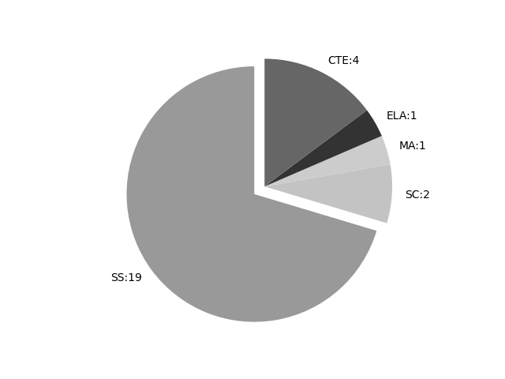

Idaho
Report date: 2021-07-08
The frequency of all keywords found in this state's standards: 27
Comparable state score: 0.453 (median: .303, SD: .324)
The frequency above is the sum of all keywords found in all of this state's four core academic standards and the state's CTE/career standards. This total count is broken down by keyword and discipline area below.
On this site, 'comparable scores' are calculated as: keywords found divided by total words in the standards document(s) - multiplied by 100,000. The comparable scores attempt to normalize data, accounting for very different sizes of curriculum guidance documentation.
Frequencies by keyword or phrase:- spatial: 19
- geographic information system: 3
- Global Positioning System: 2
- GIS: 3

Frequencies by discipline area: - SS: 19 Comp score: 4.042
- SC: 2 Comp score: 0.229
- MA: 1 Comp score: 0.086
- ELA: 1 Comp score: 0.094
- CTE: 4 Comp score: 0.166
Review the standards document(s) used in this machine search: external link
Examples of keyword use by discipline area (and document): - CTE
- Ecology-Natural-Resource-Management-Program-Standards-RV-12_30_20.pdf, page:2, position:2506
OF GPSGIS IN NATURAL RESOURCE MANAGEMENT Performance Standard 6.1: Investigate GPSGIS Systems and Their Applications 6.1.1 Define the uses of geographic information systems (GIS) and spatial analysis as it applies to natural resource mana - Ecology-Natural-Resource-Management-Program-Standards-RV-12_30_20.pdf, page:2, position:2466
UNDERSTAND THE IMPORTANCE AND APPLICATION OF GPSGIS IN NATURAL RESOURCE MANAGEMENT Performance Standard 6.1: Investigate GPSGIS Systems and Their Applications 6.1.1 Define the uses of geographic information systems (GIS) and spatial analysis as it applies to nat - Ecology-Natural-Resource-Management-Program-Standards-RV-12_30_20.pdf, page:2, position:2619
Applications 6.1.1 Define the uses of geographic information systems (GIS) and spatial analysis as it applies to natural resource management. 6.1.2 Describe the purpose and function of a Global Positioning System (GPS). 6.1.3 Demonstrate the ability to use a G - Ecology-Natural-Resource-Management-Program-Standards-RV-12_30_20.pdf, page:2, position:2497
APPLICATION OF GPSGIS IN NATURAL RESOURCE MANAGEMENT Performance Standard 6.1: Investigate GPSGIS Systems and Their Applications 6.1.1 Define the uses of geographic information systems (GIS) and spatial analysis as it applies to natural
- ELA
- ELA-Literacy-Standards.pdf, page:32, position:422
Grade 4 Students: Grade 5 Students: L.3.6 Acquire and use accurately grade-appropriate conversational, general academic, and domain-specific words and phrases, including those that signal spatial and temporal relationships (e.g., After dinner
- MA
- ICS-Mathematics.pdf, page:24, position:1334
in combined sets, or counting the number of objects that remain in a set after some are taken away. 2. Students describe their physical world using geometric ideas (e.g., shape, orientation, spatial relations) and vocabulary. They identify, name,
- SC
- ICS-Science-Legislative.pdf, page:47, position:1790
on evidence for how geoscience processes have changed Earth™s surface at varying time and spatial scales. Further Explanation: Emphasis is on how processes change Earth™s surface at time and spatial scales that can be large (such as slow plate mo - ICS-Science-Legislative.pdf, page:73, position:510
Earth™s Systems Performance Standards Students who demonstrate understanding can: ESS2-HS-1. Develop a model to illustrate how Earth™s internal and surface processes operate at different spatial and temporal scales to form continental and ocea
- SS
- ICS-Social-Studies.pdf, page:2, position:378
grade level Goal 1.9: Identify the role of religion in the development of human civilization. No objectives at this grade level Standard 2: Geography Students in Kindergarten analyze the spatial organizations of people, places and Goal 2.1 - ICS-Social-Studies.pdf, page:6, position:372
this grade level Goal 1.9: Identify the role of religion in the development of human civilization. No objectives at this grade level Standard 2: Geography Students in Grade 1 analyze the spatial organizations of people, places and environment - ICS-Social-Studies.pdf, page:10, position:371
at this grade level Goal 1.9: Identify the role of religion in the development of human civilization. No objectives at this grade level Standard 2: Geography Students in Grade 2 analyze the spatial organizations of people, places, and environment - ICS-Social-Studies.pdf, page:14, position:632
at this grade level Goal 1.9: Identify the role of religion in the development of human civilization. No objectives at this grade level Standard 2: Geography Students in Grade 3 analyze the spatial organizations of people, places, and environment - ICS-Social-Studies.pdf, page:19, position:1385
at this grade level Goal 1.9: Identify the role of religion in the development of human civilization. No objectives at this grade level Standard 2: Geography Students in Grade 4 analyze the spatial organizations of people, places and environment - ICS-Social-Studies.pdf, page:25, position:117
- ICS-Social-Studies.pdf, page:29, position:1651
explain the appropriate uses for each. 6-9.GWH.2.1.2 Apply latitude and longitude to locate places on Earth and describe the uses of technology, such as Global Positioning Systems (GPS) and Geographic Information Systems (GIS). 6-9.GWH.2.1.3 Use mental maps to an - ICS-Social-Studies.pdf, page:29, position:832
the role of religion in the development of human civilization. No objectives in GeographyWestern Hemisphere Standard 2: Geography Students in Geography-Western Hemisphere analyze the spatial organizations of people, placephysical environ - ICS-Social-Studies.pdf, page:29, position:1682
each. 6-9.GWH.2.1.2 Apply latitude and longitude to locate places on Earth and describe the uses of technology, such as Global Positioning Systems (GPS) and Geographic Information Systems (GIS). 6-9.GWH.2.1.3 Use mental maps to answer g - ICS-Social-Studies.pdf, page:35, position:1869
the appropriate uses for each. 6-9.GEH.2.1.2 Apply latitude and longitude to locate places on Earth and describe the uses of technology, such as Global Positioning Systems (GPS) and Geographic Information Systems (GIS). 6-9.GEH.2.1.3 Use mental maps to an - ICS-Social-Studies.pdf, page:35, position:1024
the role of religion in the development of human civilization. No objectives in GeographyEastern Hemisphere Standard 2: Geography Students in Geography-Eastern Hemisphere analyze the spatial organizations of people, how human actions modi - ICS-Social-Studies.pdf, page:35, position:1831
different map projections, and explain the appropriate uses for each. 6-9.GEH.2.1.2 Apply latitude and longitude to locate places on Earth and describe the uses of technology, such as Global Positioning Systems (GPS) and Geographic Information Systems (GIS). - ICS-Social-Studies.pdf, page:35, position:1900
each. 6-9.GEH.2.1.2 Apply latitude and longitude to locate places on Earth and describe the uses of technology, such as Global Positioning Systems (GPS) and Geographic Information Systems (GIS). 6-9.GEH.2.1.3 Use mental maps to answer g - ICS-Social-Studies.pdf, page:41, position:1683
and created social order. 6-9.WHC.1.9.4 Describe why different religious beliefs were sources of conflict. Standard 2: Geography Students in World History and Civilization analyze the spatial organizations of people, nalyze the human and - ICS-Social-Studies.pdf, page:47, position:241
47 Goal 1.9: Identify the role of religion in the development of human civilization. No objectives in U.S. History I Standard 2: Geography Students in U.S. History I analyze the spatial organizations of people, places, and explain h - ICS-Social-Studies.pdf, page:51, position:1865
History II Goal 1.9: Identify the role of religion in the development of human civilization. No objectives in U.S. History II Standard 2: Geography Students in U.S. History II analyze the spatial organizations of people, places, and explain ho - ICS-Social-Studies.pdf, page:52, position:82
- ICS-Social-Studies.pdf, page:56, position:666
2: Geography Students in American Government explain how geography enables people to comprehend the relationships between people, places, and environments over time. Goal 2.1: Analyze the spatial organizations of people, places, and environment - ICS-Social-Studies.pdf, page:61, position:358
No objectives in Economics Standard 2: Geography Students in Economics analyze the human and physical characteristics of different places and regions. Goal 2.1: Analyze the spatial organizations of people, places, and environment
{kind=link}